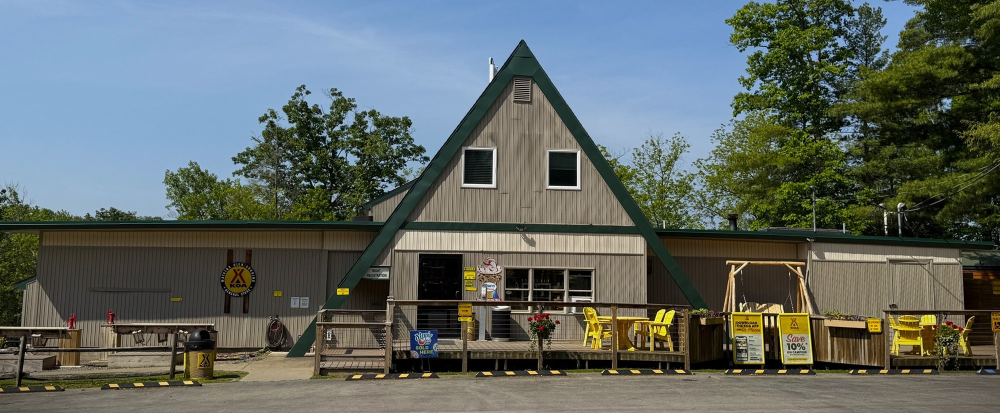
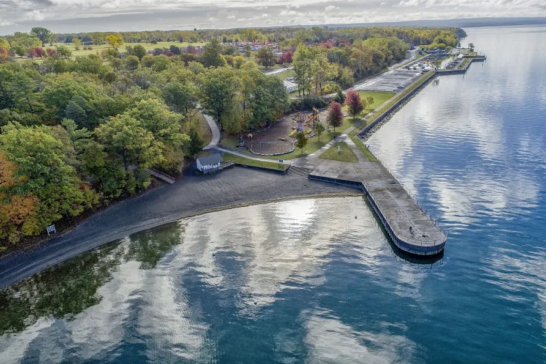
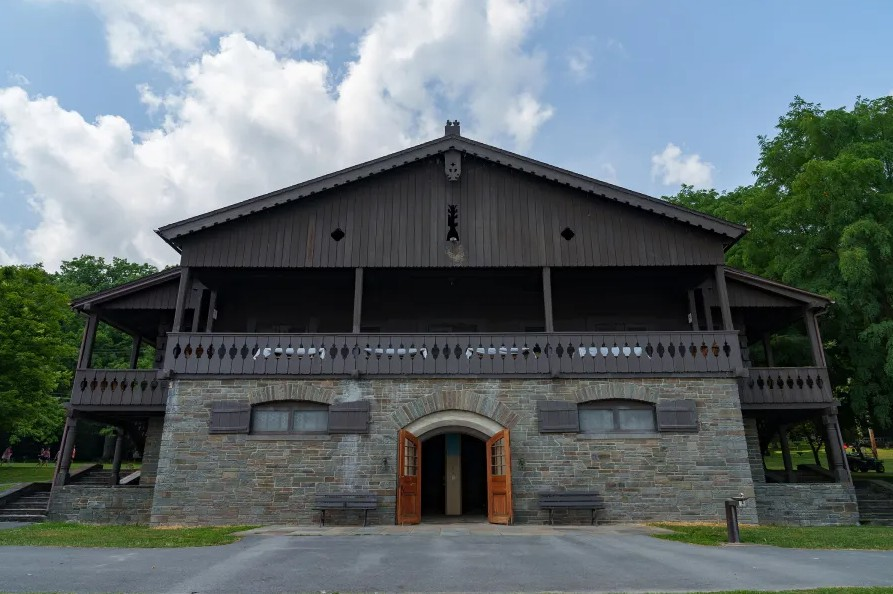

Finger Lakes RV Camping Guide: Navigating New York's Wine Trail & Gorge Corridors
The New York Finger Lakes region offers some of the most spectacular driving and camping in the Northeast, framed by steep glacial gorges, pristine glacier-carved lakes, and hundreds of world-class wineries. However, navigating narrow lake-corridor state routes, historic stone bridges, and sloping state park loops requires meticulous planning for Class A motorhomes, large fifth wheels, and travel trailers.
This regional guide breaks down verified big-rig clearances, toad staging strategies, and top-tier hookup options across Seneca and Cayuga Lake basins.
🗺️ Curated Finger Lakes Rig-Fit Campground Grid
Here are four premier campgrounds hand-selected for the Finger Lakes cluster, featuring verified pad lengths, utility access, and towing logistics:

Watkins Glen / Corning KOA Resort
Premier Finger Lakes resort featuring 50-amp full hookups, big-rig pull-throughs, and indoor/outdoor pools.
View Full Rig-Fit Guide
Sampson State Park
Former military base on Seneca Lake offering the only full-hookup RV sites among Finger Lakes state parks.
View Full Rig-Fit Guide
Watkins Glen State Park
Iconic gorge crown jewel featuring dramatic stone staircases, cascading waterfalls, and wooded park loops.
View Full Rig-Fit Guide
Cayuga Lake State Park
Picturesque northern lakefront park with shaded electric sites, swimming beach, and wine trail access.
View Full Rig-Fit Guide🚚 Complete Finger Lakes Infrastructure Breakdown
In addition to our featured grid above, our fully audited regional cluster encompasses six key destinations tailored for diverse rig configurations:
- Watkins Glen / Corning KOA Resort: Best for big-rig motorhomes requiring 50-amp service, pull-through ease, and resort amenities.
- Sampson State Park: Best state park option for full hookups and massive open layout on Seneca Lake.
- Watkins Glen State Park: Best for proximity to the world-famous Gorge Trail; requires adherence to wooded loop length limits.
- Cayuga Lake State Park: Best northern lake basecamp for touring Seneca Falls historical sites and Cayuga wine country.
- Taughannock Falls State Park: Stunning gorge camping near Ithaca, featuring sites close to the 215-foot waterfall.
- Clute Memorial Park & Recreation: Premier municipal waterfront park right on Seneca Lake within walking distance of downtown Watkins Glen.
- Finger Lakes RV Resort: Luxury private RV basecamp situated directly along the Hector ridge wine trail corridor.
⚙️ Essential Gear for Finger Lakes RVing
Navigating rolling ridge grades and managing park utility pedestals in New York requires reliable onboard equipment:
1. Precision RV GPS Routing
Garmin RV 895 GPS Navigator
Why you need it: Essential for steering clear of low-clearance rural stone bridges and monitoring steep grade transitions along the Seneca and Cayuga Lake wine trail corridors.
Check Price on Amazon2. Pedestal Power Protection
Progressive Industries EMS-PT30X Heavy-Duty Surge Protector
Why you need it: Protects high-draw electrical systems against grid voltage sags during peak summer resort occupancy across state park and private campgrounds.
Check Price on Amazon💬 RVer Community Intelligence
Have you hauled a rig through the Finger Lakes recently? Share your routing insights, low branch warnings, or campground tips with fellow travelers!
👉 Submit a Quick Rig-Fit Update